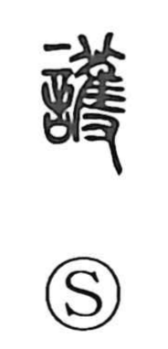

護

Uncategorized
Kun: mamoru | On: go
to protect ・ to guard ・ safeguard
Explanation
護 is a phono-semantic character. Its phonetic component ultimately derives from a graph showing an eared owl (萑) set on the hand (又) for bird divination—an act meant to ward off calamity and secure protection. The Shuowen glosses it as “to safeguard” and “to watch,” reinforcing the sense of vigilant care. With this auspicious, protective rite as its core image, 護 came to mean to protect and preserve.